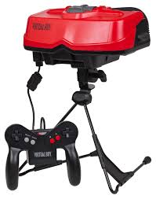

The majorty of the population does not seem to be very interested in using Virtual and Augmented realuity for entertainment or productivity mainly because of the cost and other barriers to entry. An article from Vice written by Janus Rose criticizes the recently released Apple Vision Pro as an "expensive novelty" for rich peopele. Companies who have previously tried to appeal to a general audience with VR have all failed. Examples being the HTC Vive, the Oculus rift, Google cardboard and countless other VR tech startups that failed to capture the attention of the general public. While technology like the vision pro is very impressive it just fails to be much more than a fad for the people who arent extremely interested in VR or AR.
Read More
A BBC article by Chris Stokel-Walker is also a little bit speculative of the Apple Vision Pro. While not as crass as the Vice opinion article this BBC article also takes into account the many past failures of VR in the entertainment industry. They claim that the fact that apple is attempting to make the Vision Pro not for standalone use but rather to be used in conjunction with an apple computer is a good decision for marketing the device. This makes the Vision pro more appealing to people in the Apple ecosystem but making it much less appealing to those outside of the Apple environment.
Read MoreA Tech Crunch article written by Haje Kamps just before the release of the Vision Pro is equally as speculative of its success even before it has launched. Kamps theorizes that, just like those that had come before it, the Vison Pro will briefly encapsulate a few and then promptly be forgotten about. To support this theory tech crunch sites themselves. In 2015 they published an article that predicted that the VR and AR market would be worth 150 billion dollars and that today it is worth only 32 Billion dollars. They cite this discrepancy in the same ways that both the BBC and Vice articles did. It was caused by a lack of long term interest in VR. While it is possible for the Vision pro to succeed the pretense set by previous failures is not promising.
Read More 